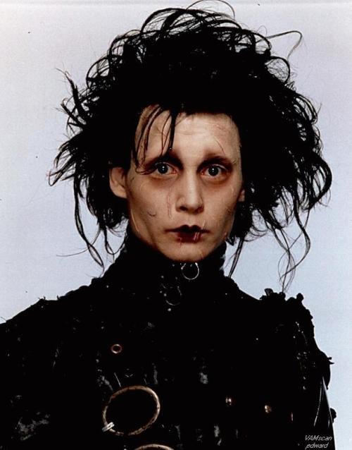

La historia se inicia cuando una vendedora de maquillaje llamada Peg, entra a una mansión con el fin de vender sus productos de belleza. Al adentrarse en el lugar se encuentra con Edward, un joven que fue creado a partir de un robot y no fue terminado tras la muerte de su creador, quedando con tijeras en lugar de manos. Conmovida por su bondad e inocencia decide llevárselo a su casa. Nadie en su familia (su esposo Bill y su hijo Kevin) parecen incómodos con la presencia de Edward e incluso los vecinos se interesan por el misterioso huésped de Peg. Sin embargo, al llegar
Kim, la hija mayor de Peg, se desata una serie de problemas, pues ella sí se siente incómoda con Edward en casa. Edward se enamora de ella. Sin embargo ella tiene novio, jim, el cual de cierta forma evita que Kim descubra sus sentimientos hacia Edward. Debido a su inocencia, muchos de los vecinos de Peg se aprovechan de él haciendo que les corte el pelo o podando sus jardines, esculpiendo figuras fantásticas. Sin embargo, Jim encuentra cómo sacar provecho de las "mágicas manos" de Edward, haciendo que abra las puertas para robar dinero de su propia casa. En el momento en el que son descubiertos por la policía, es abandonado por todos, a excepción de Kim.
Es en ese momento cuando ella descubre lo que siente por Edward: más que lástima o compasión, es amor. Edward es liberado después de un examen psicológico que revela que su aislamiento le permitió vivir sin un sentido de la realidad y el sentido común. Durante la Navidad, Edward es temido por casi todo el mundo a su alrededor, excepto la familia Boggs.
| El joven manos de tijeras |
|---|
|  |
Una de sus primeras colaboraciones con Tim Burton, donde interpreta a un ser inocente con tijeras en lugar de manos. |